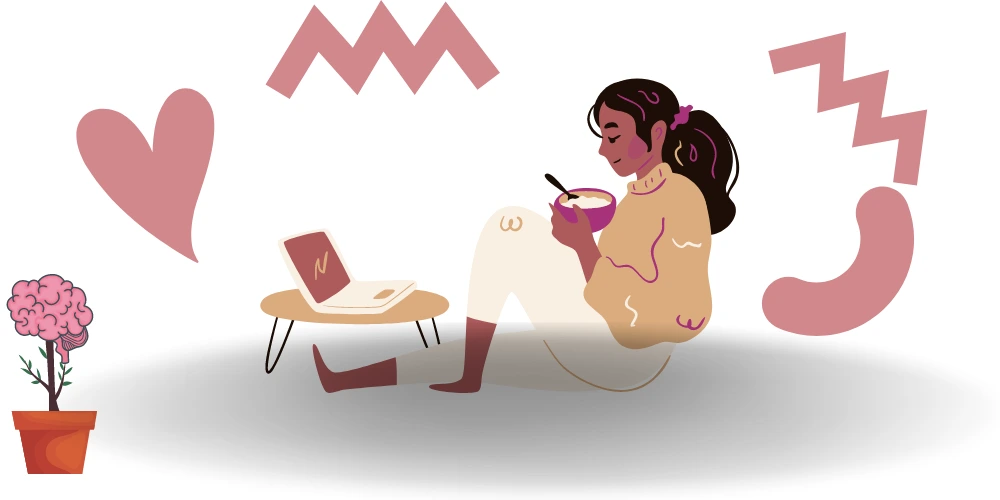

Before anything else, let’s get one thing straight, life is precious, and though it can be complicated sometimes. It is ours, we only get one and so we should take care of it. If we need help, we can get it! If we are going through a mental health crisis, different types of help are available friends, family, hospital emergency departments or your local doctor are a few. Also, there are numerous telehealth services and online mental health counselling options available in Australia. If the support is not available locally, then online health can help you to deal with Mental Health Crisis Prevention. Mental health emergencies are always a serious matter and let us not ever think that we are wasting people’s time by reaching out. Every one of us deserves help.
Life’s Unpredictability
Yes. Unfortunately at times, we will find ourselves in the middle of very rough and absolutely horrifying days where problems seem to be endless. The feeling of misery becomes hard to keep up with. We find the need to talk to people but we think, “they will never understand,” or “nothing no one can do will help me”. At times, we feel helpless because we or ourselves, do not understand why we feel the way that we do. Therefore, how can we expect others to understand us? But you see, we are not alone in this battle. There are a lot of people who are going through the same. They too experience the tangled feelings, the unorganised thoughts which are very familiar to the feeling of confusion that we feel.
It isn’t always easy to make out the difference between expected behaviour compared with abnormal behaviour or mental illness. Though personality and behavioural tests are available, there’s just no easy way to tell if a person suffers from mental illness. How do we tell apart depression which is a mental illness from sadness which is normal human emotion? The only way to know is to seek help from a professional for identification. The is pretty vague and some are left guessing. Are they are reacting as would another “normal” person’s reaction or is there something else lying underneath?
Signs and Symptoms which may alert us to a possible Mental Health Crisis
There are a lot of types and kinds of mental illness and each bears a signature of its signs and symptoms. However, there are features that point to a possible crisis. Features we can note to then get help to deal with a mental health crisis in Australia. Some of the prominent traits or indications are as follows:
- Uncontrollable or unrestrained worrying which is significantly different from previous.
- Extreme feelings of highs and lows, which are unmanageable.
- Inability to concentrate to the point of confusion
- Uncharacteristic racing streams of thought.
- Easily irritated, volatile and feelings of anger that feel unsafe.
- Delusional or hallucinations.
- Thoughts of suicide
- Thoughts of wanting to hurt ourselves or others
Young children and young adults can also experience mental health issues. On the other hand, young children are unable to express their thoughts in words and racing feelings. So the manifestation of a mental condition can be seen through their actions. This may include and is not limited to the following:
- Differences in school performance or attendance
- Sudden inability to follow simple instructions.
- New rule-breaking
- Hyperactive, inability to stay still.
- New nightmares or erratic sleeping patterns.
- Sits quietly alone and is more withdrawn.
- Not eating or losing weight.
Help is Available
When things get overwhelming, even if stress is considered a temporary trigger to unhappiness, help is available.
Mental health services in Australia (MHSA) reflects the government’s national response to address the needs of making a health and welfare service available to us. When feeling lost, hopeless, when we feel like help is not available, below are some stats that we should consider. These facts and figures you can easily find in the Australian Institute of Health and Welfare:
- $9.9 billion was spent on mental health in 2017–18.
- 4.3 million people received mental health-related prescriptions in 2018-19.
- 453,000 people received state/territory community mental health care in 2018-19.
- 86,499 clients with mental health issues used Specialist Homelessness Services in 2018-19.
- 2018 workforce states that there are 3,441 psychiatrists, 23,083 mental health nurses and 27,027 psychologists who helped extend MHSA throughout Australia.
- 10.6% of the Australian population received Medicare-subsidised mental health-specific services in 2018-29.
- 4.3 million people received mental health-related prescriptions in 2018-19.
- $9.9 billion mental health-related expenditure was spent in 2017-18.
- 1.9% of the Australian population received clinical mental health care in 2017-18.
- 1,655 specialised mental health facilities provided care in 2017-18.
- GP mental health-related encounters from 2006 to 2016 has gone up for mental health care related services.

Get Help for the Mental Health Crisis
If we or anyone we know, love and care for, may suffer some kind of mental illness. Therefore, they might need help to deal with a mental health crisis. Hence, If we find out that professional help may be needed, let’s find the help needed. For those who do not wish to physically see a psychiatrist (if medication is or may be needed) or a psychologist (for counselling) then online mental health services are one of the options that we can use in Australia. Telehealth services are an option. Online mental health counselling makes it easier for those who need someone to talk to or with, so that the feelings of anxiety, stress, distress, anger and loneliness, can slowly start to be addressed.
We do not have to leave our homes to get the help we need. Our family doctor can help us find the right professional psychiatry and psychology services out there but the first step is ours to make. As an initial step, speaking with your GP about the presence of new concerning mental health symptoms might be a good first option. There are also multiple mental health emergency lines that are available, some online 24/7. We can find quite a few mental health emergencies in Australia by visiting the National Health Services Directory or by calling these helplines:
- Emergency Service – 000
- beyondblue (external site) – 1300 224 636
- headspace (external site) – 1800 650 890
- Men’s Line Australia (external site) – 1300 789 978
- The Samaritans Crisis Line (external site) – Crisis Line: 135 247 and Youthline WA: 1800 198 313
- Post and Antenatal Depression Association of Australia (PANDA) HelpLine (external site) – 1300 726 306
- Multicultural Mental Health (external site) – 1300 136 289
- Sexual Assault Resource Centre (external site) – 1800 199 888
- YouthFocus (external site) – 6266 4333